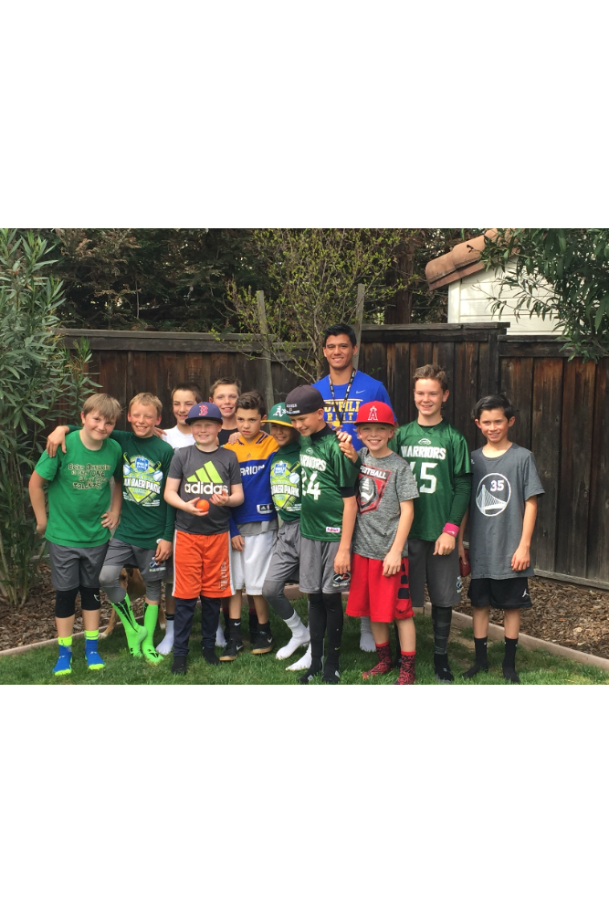

Bruin AI Operations
- Scaled and operated the largest AI club at UCLA, focusing on operational tasks including recruiting, marketing and outreach
- Recruiting: Interviewed and recruited a team of over 55 members starting with just me and my co-founder. Learned how to understand skills needed for positions, which positions to have and why, how to interview and vet candidates
- Marketing: Created marketing materials for Bruin AI, including flyers, media materials, social media posts, website marketing
- Outreach: Created and arranged multiple partnerships with Bruin AI, including Cisco, Humane, Carrot, Upskill and Actuals

Football Coach
- Coached football grades k-8
- Created a playbook and assigned positions for players. Developed leadership skills and organizational skills in the process
- Lead the team to 2 league championships
Hospital Volunteer
- Volunteered over 200 hours at UCSD Jacobs Medical Center at the peak of the pandemic
- Gained organizational skills and developed a deeper empathy for patients and humanity